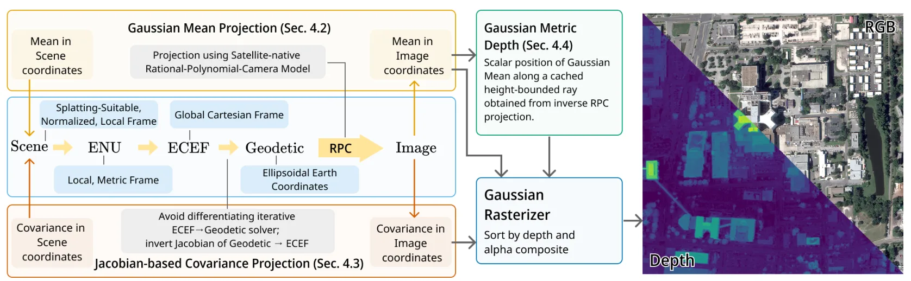
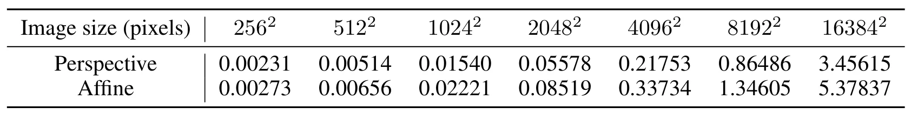
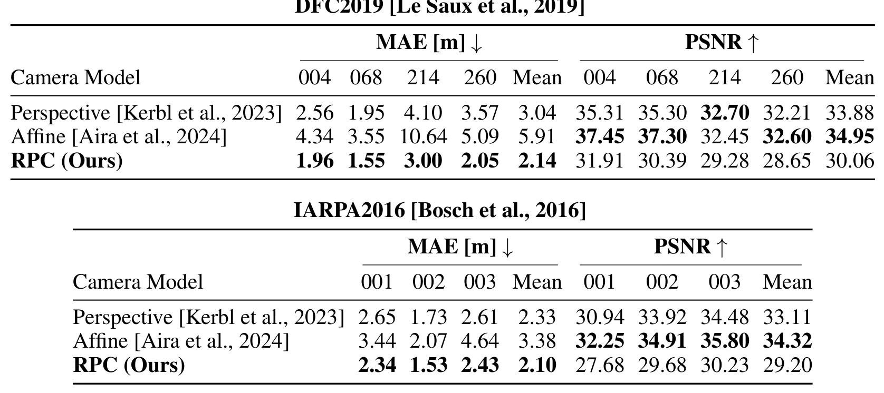

RPC-GS：面向卫星影像的原生 RPC 渲染高斯溅射RPC-GS: Gaussian Splatting with native RPC Rendering for Satellite Imagery
对卫星三维重建、地理配准和高度误差建模很有价值；与 GNSS/遥感/视觉融合的地图生产链条存在潜在连接。
一句话工作总结
RPC-GS 让 3DGS 直接使用卫星 RPC 相机模型，避免透视/仿射近似带来的地理几何与高度误差。
摘要
RPC-GS 是首个在卫星影像中原生使用 Rational Polynomial Camera（RPC）模型的 Gaussian Splatting 框架。RPC 是现代 pushbroom 卫星传感器复杂成像几何的事实标准；既有卫星 3DGS 方法常将 RPC 近似为透视或仿射相机，从而引入重建几何误差。RPC-GS 直接在 splatting 过程中通过 RPC 模型投影 Gaussian 均值与协方差，并把 RPC 嵌入一系列地理坐标变换链中，实现从适合 splatting 的场景坐标到图像坐标的映射。论文还推导了数值鲁棒的 Jacobian-based covariance projection，并针对 RPC 缺少显式深度的问题引入 metric ray-based depth formulation。实验表明，原生 RPC renderer 在 DFC2019 和 IARPA2016 等基准上取得最低重建误差，高度误差相对透视/仿射近似显著下降。
We present RPC-GS, the first Gaussian Splatting framework for satellite imagery that operates natively with Rational Polynomial Camera (RPC) models. The RPC model is the de facto standard for representing the complex imaging geometry of modern pushbroom satellite sensors. To simplify rendering, prior satellite Gaussian Splatting methods replace the RPC model with perspective or affine camera approximations, leading to geometric errors during reconstruction. RPC-GS avoids these approximations by projecting Gaussian means and covariances directly through the RPC model during the splatting process. We embed the RPC model in a chain of carefully selected geo-coordinate transformations representing a mapping from splatting-suitable scene coordinates to image coordinates. To map the Gaussian covariance matrices, we derive a numerically robust Jacobian-based covariance projection for the (partially nonlinear) coordinate transformations. Since RPCs lack an explicit notion of camera depth, we integrate a metric ray-based depth formulation. We benchmark RPC, perspective, and affine camera models in a unified framework, with our native RPC renderer consistently achieving the lowest reconstruction error on leading satellite benchmark datasets, improving mean altitude error over perspective and affine approximations by 29.6% and 63.8% on DFC2019, and by 9.9% and 37.9% on IARPA2016. We release our code to support future research of Gaussian Splatting in the satellite imaging domain.
中文解读摘录
- 作者：Yuang Shi, Simone Gasparini, Géraldine Morin, Wei Tsang Ooi；类别：cs.CV / cs.MM / eess.IV；发布日期：2026-06-05；采集 score=11
- 核心问题：现有渐进式 3DGS 多采用离散 LoD 层，每层维护独立 splat 集合，容易导致误差累积、splat 冗余和质量跳变。
- 方法亮点：提出连续层级
Evolution Tree，以 wavelet-like parent-child refinement 让子节点显式修正祖先层误差，从而形成稀疏、可压缩的层间信号。 - 结果信号：论文称 splat 冗余从超过 65% 降至低于 25%，传输 payload 最高降低 2.4×，GPU VRAM 最高降低 5.5×，适合实时自适应 3DGS streaming。
- 关注价值：如果工程实现稳定，这类连续 LoD/流式表示可用于移动机器人/远程巡检中的大场景 3DGS 地图分发与带宽自适应浏览。
图表/页面预览
{kind=link}

{kind=link}

{kind=link}
